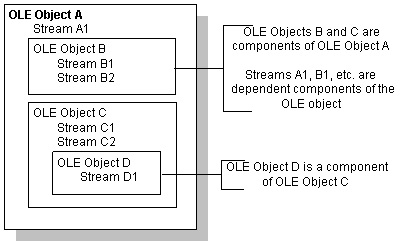
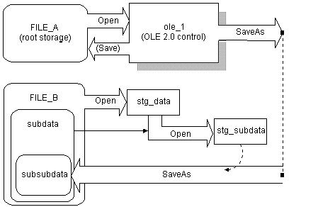
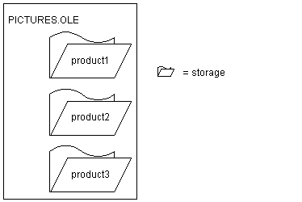
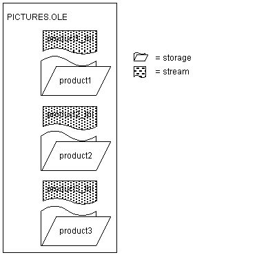

In addition to OLE objects in controls and objects for automation, PowerBuilder provides an interface to the underpinnings of OLE data storage.
OLE data is stored in objects called streams, which live in objects called storages. Streams and storages are analogous to the files and directories of a file system. By opening, reading, writing, saving, and deleting streams and storages, you can create, combine, and delete your OLE objects. PowerBuilder provides access to storages and streams with the OLEStorage and OLEStream object types.
When you define OLE controls and OLEObject variables, you have full access to the functionality of server applications and automation, which already provide you with much of OLE's power. You might never need to use PowerBuilder's storage and stream objects unless you want to construct complex combinations of stored data.
 Storage files from other applications This section discusses OLE storage files that a PowerBuilder
application has built. Other PowerBuilder applications will be able
to open the objects in a storage file built by PowerBuilder. Although
Excel, Word, and other server applications store their native data
in OLE storages, these files have their own special formats, and
it is not advisable to open them directly as storage files. Instead,
you should always insert them in a control (InsertFile)
or connect to them for automation (ConnectToObject).
Storage files from other applications This section discusses OLE storage files that a PowerBuilder
application has built. Other PowerBuilder applications will be able
to open the objects in a storage file built by PowerBuilder. Although
Excel, Word, and other server applications store their native data
in OLE storages, these files have their own special formats, and
it is not advisable to open them directly as storage files. Instead,
you should always insert them in a control (InsertFile)
or connect to them for automation (ConnectToObject).
An OLE storage is a repository of OLE data. A storage is like the directory structure on a disk. It can be an OLE object and can contain other OLE objects, each contained within the storage, or within a substorage within the storage. The substorages can be separate OLE objects—unrelated pieces like the files in a directory—or they can form a larger OLE object, such as a document that includes pictures as shown in Figure 19-3.

A storage or substorage that contains an OLE object has identifying information that tags it as belonging to a particular server application. Below that level, the individual parts should be manipulated only by that server application. You can open a storage that is a server's object to extract an object within the storage, but you should not change the storage.
A storage that is an OLE object has presentation information for the object. OLE does not need to start the server in order to display the object, because a rendering is part of the storage.
A storage might not contain an OLE object—it might exist simply to contain other storages. In this case, you cannot open the storage in a control (because there would be no object to insert).
PowerBuilder has two object types that are the equivalent of the storages and streams stored in OLE files. They are:
These objects are class user objects, like a Transaction or Message object. You declare a variable, instantiate it, and open the storage. When you are through with the storage, you close it and destroy the variable, releasing the OLE server and the memory allocated for the variable.
Opening a storage associates an OLEStorage variable with a file on disk, which can be a temporary file for the current session or an existing file that already contains an OLE object. If the file does not exist, PowerBuilder creates it.
You can put OLE objects in a storage with the SaveAs function. You can establish a connection between an OLE control in a window and a storage by calling the Open function for the OLE control.
A stream is not an OLE object and cannot be opened in a control. However, streams allow you to put your own information in a storage file. You can open a stream within a storage or substorage and read and write data to the stream, just as you might to a file.
 Performance tip Storages provide an efficient means of displaying OLE data.
When you insert a file created by a server application into a control,
OLE has to start the server application to display the object. When
you open an object in an OLE storage, there is no overhead for starting
the server—OLE uses the stored presentation information
to display the object. There is no need to start the server if the
user never activates the object.
Performance tip Storages provide an efficient means of displaying OLE data.
When you insert a file created by a server application into a control,
OLE has to start the server application to display the object. When
you open an object in an OLE storage, there is no overhead for starting
the server—OLE uses the stored presentation information
to display the object. There is no need to start the server if the
user never activates the object.
PowerBuilder provides several functions for managing storages. The most important are Open, Save, and SaveAs.
When you want to access OLE data in a file, call the Open function. Depending on the structure of the storage file, you might need to call Open more than once.
This code opens the root storage in the file into the control. For this syntax of Open, the root storage must be an OLE object, rather than a container that only holds other storages. (Always check the return code to see if an OLE function succeeded.)
result = ole_1.Open("MYFILE.OLE")
If you want to open a substorage in the file into the control, you have to call Open twice: once to open the file into an OLEStorage variable, and a second time to open the substorage into the control. stg_data is an OLEStorage variable that has been declared and instantiated using CREATE:
result = stg_data.Open("MYFILE.OLE")
result = ole_1.Open(stg_data, "mysubstorage")
If the user activates the object in the control and edits it, then the server saves changes to the data in memory and sends a DataChange event to your PowerBuilder application. Then your application needs to call Save to make the changes in the storage file:
result = ole_1.Save()
IF result = 0 THEN result = stg_data.Save()
You can save an object in a control to another storage variable or file with the SaveAs function. The following code opens a storage file into a control, then opens another storage file, opens a substorage within that file, and saves the original object in the control as a substorage nested at a third level:
OLEStorage stg_data, stg_subdata
stg_data = CREATE OLEStorage
stg_subdata = CREATE OLEStorage
ole_1.Open("FILE_A.OLE")
stg_data.Open("FILE_B.OLE")
stg_subdata.Open("subdata", stgReadWrite!, &
stgExclusive!, stg_data)
ole_1.SaveAs(stg_subdata, "subsubdata")
The diagram illustrates how to open the nested storages so that you can perform the SaveAs. If any of the files or storages do not exist, Open and SaveAs create them. Note that if you call Save for the control before you call SaveAs, the control's object is saved in FILE_A. After calling SaveAs, subsequent calls to Save save the object in subsubdata in FILE_B.

The following example shows a simpler way to create a sublevel without creating a storage at the third level. You do not need to nest storages at the third level, nor do you need to open the substorage to save to it:
OLEStorage stg_data, stg_subdata
stg_data = CREATE OLEStorage
stg_subdata = CREATE OLEStorage
ole_1.Open("FILE_A.OLE")
stg_data.Open("FILE_B.OLE")
ole_1.SaveAs(stg_data, "subdata")
When a storage is open, you can use one of the Member functions to get information about the substorages and streams in that storage and change them.
This code checks whether the storage subdata exists in stg_data before it opens it. (The code assumes that stg_data and stg_subdata have been declared and instantiated.)
boolean lb_exists
result = stg_data.MemberExists("subdata", lb_exists)
IF result = 0 AND lb_exists THEN
result = stg_subdata.Open(stg_data, "subdata")
END IF
To use MemberExists with the storage member IOle10Native, use the following construction:
ole_storage.memberexists(char(1) + 'Ole10Native', &
lb_boolean)
The char(1) is required because the "I" in IOle10Native is not an I, as you see if you look at the storage with a utility such as Microsoft's DocFile Viewer.
You need to use a similar construction to open the stream. For example:
ole_stream.open(ole_storage, char(1) + 'Ole10Native', &
StgReadWrite!, StgExclusive!)
Suppose you have several drawings of products and you want to display the appropriate image for each product record in a DataWindow object. The database record has an identifier for its drawing. In an application, you could call InsertFile using the identifier as the file name. However, calling the server application to display the picture is relatively slow.
Instead you could create a storage file that holds all the drawings, as shown in the diagram. Your application could open the appropriate substorage when you want to display an image.

The advantage of using a storage file like this one (as opposed to inserting files from the server application into the control) is both speed and the convenience of having all the pictures in a single file. Opening the pictures from a storage file is fast, because a single file is open and the server application does not need to start up to display each picture.
 OLE objects in the storage Although this example illustrates a storage file that holds
drawings only, the storages in a file do not have to belong to the
same server application. Your storage file can include objects from
any OLE server application, according to your application's
needs.
OLE objects in the storage Although this example illustrates a storage file that holds
drawings only, the storages in a file do not have to belong to the
same server application. Your storage file can include objects from
any OLE server application, according to your application's
needs.
This example is a utility application for building the storage file. The utility application is a single window that includes a DataWindow object and an OLE control.
The DataWindow object, called dw_prodid, has a single column of product identifiers. You should set up the database table so that the identifiers correspond to the file names of the product drawings. The OLE control, called ole_product, displays the drawings.
The example has three main scripts:
First, add the dw_prodid and ole_product controls to the window.
In the application's Open event, connect to the database and open the window.
Declare an OLEStorage variable as an instance variable of the window:
OLEStorage stg_prod_pic
The following code in the window's Open event instantiates an OLEStorage variable and opens the file PICTURES.OLE in that variable:
integer result
stg_prod_pic = CREATE OLEStorage
result = stg_prod_pic.Open("PICTURES.OLE")
dw_prod.SetTransObject(SQLCA)
dw_prod.Retrieve()
 Retrieve triggers the RowFocusChanged event It is important that the code for creating the storage variable
and opening the storage file comes before Retrieve. Retrieve triggers
the RowFocusChanged event, and the RowFocusChanged event refers
to the OLEStorage variable, so the storage must be open before you
call Retrieve.
Retrieve triggers the RowFocusChanged event It is important that the code for creating the storage variable
and opening the storage file comes before Retrieve. Retrieve triggers
the RowFocusChanged event, and the RowFocusChanged event refers
to the OLEStorage variable, so the storage must be open before you
call Retrieve.
The InsertFile function displays the drawing in the OLE control. This code in the RowFocusChanged event gets an identifier from the prod_id column in a DataWindow object and uses that to build the drawing's file name before calling InsertFile. The code then saves the displayed drawing in the storage:
integer result
string prodid
//Get the product identifier from the DataWindow.
prodid = this.Object.prod_id[currentrow]
// Use the id to build the file name. Insert the
// file's object in the control.
result = ole_product.InsertFile( &
GetCurrentDirectory() + "\" + prodid + ".gif")
// Save the OLE object to the storage. Use the
// same identifier to name the storage.
result = ole_product.SaveAs( stg_prod_pic, prodid)
This code in the window's Close event saves the storage, releases the OLE storage from the server, and releases the memory used by the OLEStorage variable:
integer result
result = stg_prod_pic.Save()
DESTROY stg_prod_pic
 Check the return values Be sure to check the return values when calling OLE functions.
Otherwise, your application will not know if the operation succeeded.
The sample code returns if a function fails, but you can display
a diagnostic message instead.
Check the return values Be sure to check the return values when calling OLE functions.
Otherwise, your application will not know if the operation succeeded.
The sample code returns if a function fails, but you can display
a diagnostic message instead.
After you have set up the database table with the identifiers of the product pictures and created a drawing for each product identifier, run the application. As you scroll through the DataWindow object, the application opens each file and saves the OLE object in the storage.
To use the images in an application, you can include the prod_id column in a DataWindow object and use the identifier to open the storage within the PICTURES.OLE file. The following code displays the drawing for the current row in the OLE control ole_product (typically, this code would be divided between several events, as it was in the sample utility application above):
OLEStorage stg_prod_pic
//Instantiate the storage variable and open the file
stg_prod_pic = CREATE OLEStorage
result = stg_prod_pic.Open("PICTURES.OLE")
// Get the storage name from the DataWindow
// This assumes it has been added to the DataWindow's
// rowfocuschanging event
prodid = this.Object.prod_id[newrow]
//Open the picture into the control
result = ole_product.Open( stg_prod_pic, prodid )
The application would also include code to close the open storages and destroy the storage variable.
Streams contain the raw data of an OLE object. You would not want to alter a stream created by a server application. However, you can add your own streams to storage files. These streams can store information about the storages. You can write streams that provide labels for each storage or write a stream that lists the members of the storage.
To access a stream in an OLE storage file, you define a stream variable and instantiate it. Then you open a stream from a storage that has already been opened. Opening a stream establishes a connection between the stream variable and the stream data within a storage.
The following code declares and creates OLEStorage and OLEStream variables, opens the storage, and then opens the stream:
integer result
OLEStorage stg_pic
OLEStream stm_pic_label
/***************************************************
Allocate memory for the storage and stream variables
***************************************************/
stg_pic = CREATE OLEStorage
stm_pic_label = CREATE OLEStream
/***************************************************
Open the storage and check the return value
***************************************************/
result = stg_prod_pic.Open("picfile.ole")
IF result <> 0 THEN RETURN
/***************************************************
Open the stream and check the return value
***************************************************/
result = stm_pic_label.Open(stg_prod_pic, &
"pic_label", stgReadWrite!)
IF result <> 0 THEN RETURN
PowerBuilder has several stream functions for opening and closing a stream and for reading and writing information to and from the stream.
This example displays a picture of a product in the OLE control ole_product when the DataWindow object dw_product displays that product's inventory data. It uses the file constructed with the utility application described in the earlier example (see "Example: building a storage"). The pictures are stored in an OLE storage file, and the name of each picture's storage is also the product identifier in a database table. This example adds label information for each picture, stored in streams whose names are the product ID plus the suffix _lbl.
Figure 19-6 shows the structure of the file.

The example has three scripts:
The OLEStorage variable stg_prod_pic is an instance variable of the window:
OLEStorage stg_prod_pic
The script for the window's Open event is:
integer result
stg_prod_pic = CREATE OLEStorage
result = stg_prod_pic.Open( is_ole_file)
The script for the RowFocusChanged event of dw_prod is:
integer result
string prodid, labelid, ls_data
long ll_stmlength
OLEStream stm_pic_label
/***************************************************
Create the OLEStream variable.
***************************************************/
stm_pic_label = CREATE OLEStream
/***************************************************
Get the product id from the DataWindow.
***************************************************/
this.Object.prod_id[currentrow]
/***************************************************
Open the picture in the storage file into the
control. The name of the storage is the product id.
***************************************************/
result = ole_prod.Open(stg_prod_pic, prodid)
IF result <> 0 THEN RETURN
/***************************************************
Construct the name of the product label stream and
open the stream.
***************************************************/
labelid = prodid + "_lbl"
result = stm_pic_label.Open( stg_prod_pic, &
labelid, stgReadWrite! )
IF result <> 0 THEN RETURN
/***************************************************
Get the length of the stream. If there is data
(length > 0), read it. If not, write a label.
***************************************************/
result = stm_pic_label.Length(ll_stmlength)
IF ll_stmlength > 0 THEN
result = stm_pic_label.Read(ls_data)
IF result <> 0 THEN RETURN
// Display the stream data in st_label
st_label.Text = ls_data
ELSE
result = stm_pic_label.Write( labelid )
IF result < 0 THEN RETURN
// Display the written data in st_label
st_label.Text = labelid
END IF
/****************************************************
Close the stream and release the variable's memory.
***************************************************/
result = stm_pic_label.Close()
DESTROY stm_pic_label
The script for the window's Close event is:
integer result
result = stg_prod_pic.Save()
DESTROY stg_prod_pic
Storing data in a storage is not like storing data in a database. A storage file does not enforce any particular data organization; you can organize each storage any way you want. You can design a hierarchical system with nested storages, or you can simply put several substorages at the root level of a storage file to keep them together for easy deployment and backup. The storages in a single file can be from the different OLE server applications.
If your DBMS does not support a blob datatype or if your database administrator does not want large blob objects in a database log, you can use storages as an alternative way of storing OLE data.
It is up to you to keep track of the structure of a storage. You can write a stream at the root level that lists the member names of the storages and streams in a storage file. You can also write streams that contain labels or database keys as a way of documenting the storage.